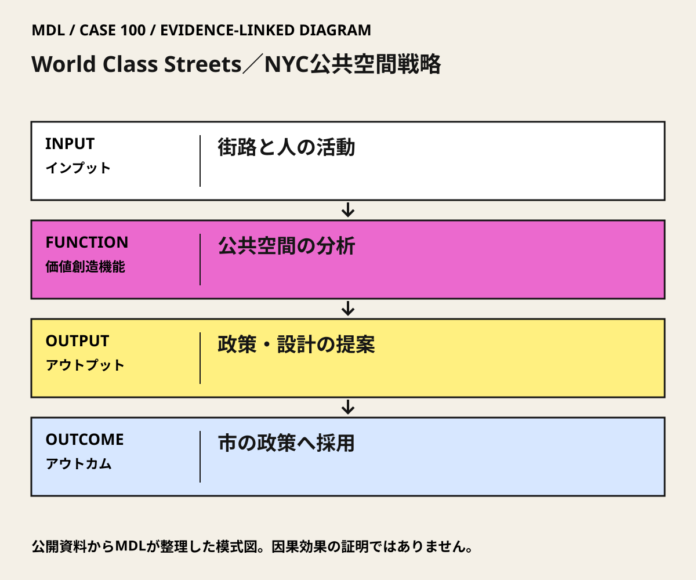

I / INPUT
何を持ち込んでいるか。
活動の出発点となる資源と課題を分けて整理します。「自社」は、その場・制度を運営する組織を指します。
II / VALUE CREATION FUNCTIONS
資源を、どう価値へ変えるか。
以下は既存の8ステップへの編集上の対応づけです。各取り組みの公式な工程名や、全工程を自前で担うことを意味しません。
III / OUTPUT
直接、何が生まれたか。
試作品、データ、契約、標準、育成した人材など、活動から直接生まれたもの。
公共空間分析を含む、2008年のWorld Class Streets報告。
公開資料で確認出典 1
IV / OUTCOME
その結果、何が変わったか。
実際の利用、行動、業務、事業、地域の変化。報告された変化と、当該活動に帰属できる効果は区別します。
PROJECT IN FOCUS / 具体的な事例
World Class Streets／NYC公共空間戦略
確認できた段階：公共空間・公共生活の調査と政策助言 調査確認日 2026-10-06
誰の課題を、どう扱ったか
生まれたもの
公共空間分析を含む、2008年のWorld Class Streets報告。
確認できた変化
NYC DOTはGehlの分析を新政策・事業の実施に直接用いたと公式に説明する。
評価の限界：観察・政策助言の採用と、後続市施策の成果を区別する。35%は交差点・信号等も含む実証の前後比較で、Gehl個人の因果効果ではない。市公表のWest Midtown南行タクシー速度は2%低下し、交通改善は一様でない。既存NYC Plaza Programの各広場への本人の直接関与は本版では未確認。
DESIGN BACKWARDS FROM IMPLEMENTATION
社会実装から逆算して、
何を先に整えているか。
実証の先にある導入・運用・継続から、この事例の設計を読み解きます。原典で確認できる仕組みと、MDLの設計解釈・他地域へ応用するための提案を区別して読んでください。「提案」「未実施」と記す内容は、当地で実施済みの工夫ではありません。仕組みの存在と、全案件で成果が出たことも別に扱います。
MORE DETAIL / 運営・根拠・応用
運営の全体像と、学びを深める資料。
費用負担、公表値、応用条件、写真・動画、原典を続けて確認できます。
01どう動かしているのか。
歩行者の活動と街路空間の状況を観察し、公共空間の質を市の設計・政策目標へつなぐ。研究・助言を受け取る行政が実施判断を持ち、後続の実証は別の事業単位で効果を確認する。
意思決定と本人の関与：Gehlは分析・助言を担い、市が政策採用と実施を判断。後続のMidtown実証は市が2010年に恒久化を決定した。全市のPlaza制度、調査報告、地区実証の決定を一つにまとめない。 Jan Gehl・Gehl Architectsは公共空間分析・戦略に関与。NYC DOTがその分析を新政策・事業へ直接用いたと公式に説明。Midtown実証の実施・評価や全広場の設計を本人の担当としない。
- 歩く人の活動から課題を読む
- 調査を街路の政策目標へ翻訳する
- 実施主体へ渡し、後続施策を別に評価する
02誰が負担し、誰が担うか。
調査・仮設整備・恒久整備の契約額と市・地域側の負担割合は、本版の公開資料では未確認。
制度やプログラムの財源と、各参加企業・地域に発生する費用は同じではありません。公開範囲を超える案件別予算・契約条件は未確認です。
03確認できたこと。
公共空間分析を含む、2008年のWorld Class Streets報告。
読み取れる範囲：観察・政策助言の採用と、後続市施策の成果を区別する。35%は交差点・信号等も含む実証の前後比較で、Gehl個人の因果効果ではない。市公表のWest Midtown南行タクシー速度は2%低下し、交通改善は一様でない。既存NYC Plaza Programの各広場への本人の直接関与は本版では未確認。
原典で確かめる ↗ 出典の説明 ↓04日本で活かすなら。
人の活動を観察した結果を、誰が政策・予算・現場実施に引き取るかを明確にする。知識の生産、政策採用、地区実証、全市の運営制度を別々に評価し、比較するときだけ接続する。
05そのまま真似できないこと。
観察・政策助言の採用と、後続市施策の成果を区別する。35%は交差点・信号等も含む実証の前後比較で、Gehl個人の因果効果ではない。市公表のWest Midtown南行タクシー速度は2%低下し、交通改善は一様でない。既存NYC Plaza Programの各広場への本人の直接関与は本版では未確認。
06次に、何を確かめるか。
提案・未実施：提案・未実施：一街区で、現状維持・時間限定滞在空間・小規模な常設化を比較し、仮設で試す。
担い手：道路管理者が安全・許可と継続判断、地域団体が清掃・利用調整、評価担当が測定を持つ。
測るもの：同曜日・同時刻の通行、滞在、交錯、配送時間、維持費を比較。天候と周辺工事も記録。
継続：安全と生活アクセスを保ち、維持費を負担できる。
修正：配送・混雑が悪化する区間や時間帯を再設計。
停止：重大な安全問題、未解決のアクセス阻害、維持主体不在。
07写真・図と原資料で確かめる。
現場の写真を見る ↑
DIAGRAM: モビリティデザインラボ · 根拠資料 ↗
図の説明
公開資料に基づく模式図。街路と人の活動 → 公共空間の分析 → 政策・設計の提案 → 市の政策へ採用。実景や地理的配置を示さない。
2026-10-06 · MDL作成の説明図。第三者の写真・図面の複製ではありません。
冒頭写真：広告看板に囲まれたタイムズスクエアの歩行者空間と人々
原資料で、当時の調査・実践を読む ↗08原典を読む。
NYC DOT Releases World Class Streets Report ↗
Gehlの具体的関与、市政策との関係
本文公開・英語。2026-10-06確認。
Green Light for Midtown Will Be Made Permanent ↗
実証範囲、負傷比較、交通のばらつき、恒久化決定
本文公開・英語。2026-10-06確認。
Jan Gehl on Why Tall Buildings Aren’t Necessarily Bad for Street Life ↗
人間の活動を先に考える設計思想
本人インタビュー本文公開・英語。市事業の独立評価ではない。2026-10-06確認。